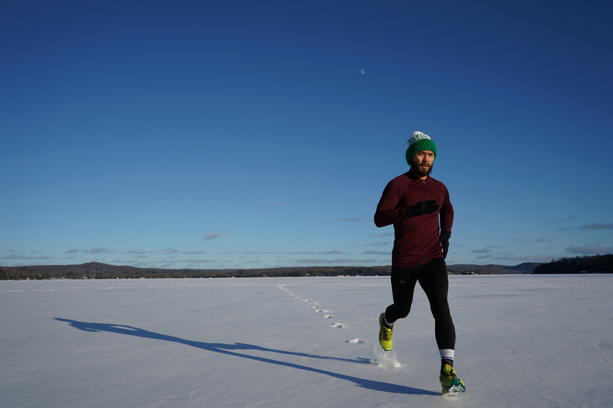

A propos
Bienvenue sur le compte du marathonien du dimanche ! 🏃🏽♂️ Ici on va parler running et préparation marathon. Je partagerai avec vous le quotidien d’un débutant de course à pied qui se prépare à courir son premier marathon seulement 1 an après avoir commencé à courir ! Alors si vous vous sentez prêts, enfilez vos baskets 👟 et venez me rejoindre dans cette aventure !
Articles
Mes débuts en course à pied

Les 20km de Paris 2022 : Une première course inoubliable
